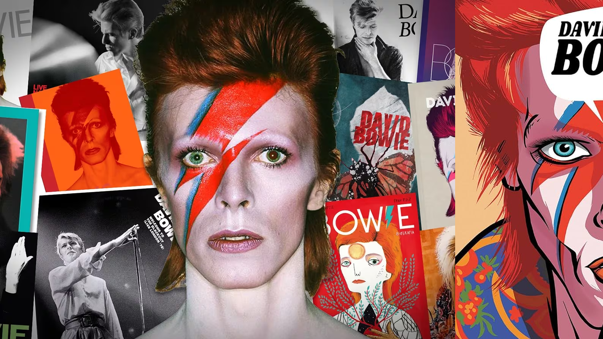

David Bowie
David Robert Jones (Londres, 8 de enero de 1947-Nueva York, 10 de enero de 2016), más conocido por su nombre artístico David Bowie.Fue un cantautor, actor, multiinstrumentista y diseñador británico. Figura importante de la música popular durante casi cinco décadas, Bowie es considerado un innovador, en particular por sus trabajos de la década de 1970 y por su peculiar voz, además de la profundidad intelectual de su obra.

No perteneció a ninguna Banda solo fue solista en toda su carrera.
Canciones más famosas
- Heroes
- Starman
- Let’s Dance
- Life on Mars?
- Space Oddity
- Under Pressure